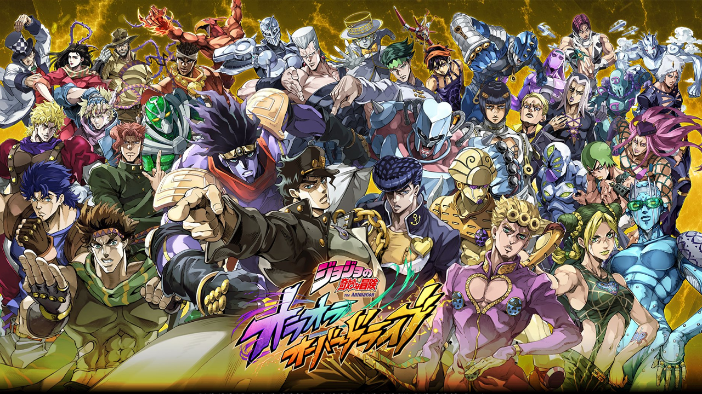

Jojo Stands
Jojo stands are introduced in part 3 stardust crusaders and is the new power system of the series after it changed from the Hamon to Stands.
Stands are supernatural manifestations of a person's fighting spirit, each with unique abilities and characteristics.
- Home - Jotaro Kujo's Stand, known for its incredible strength and precision.
- Star Platinum - Jotaro Kujo's Stand, known for its incredible strength and precision.
- Crazy Diamond - Josuke Higashikata's Stand, capable of repairing objects and healing injuries.
- Killer Queen - Yoshikage Kira's Stand, which can turn anything it touches into a bomb.
- Gold Experience - Giorno Giovanna's Stand, which can give life to inanimate objects.
- King Crimson - Diavolo's Stand, which can erase time and predict future events.
